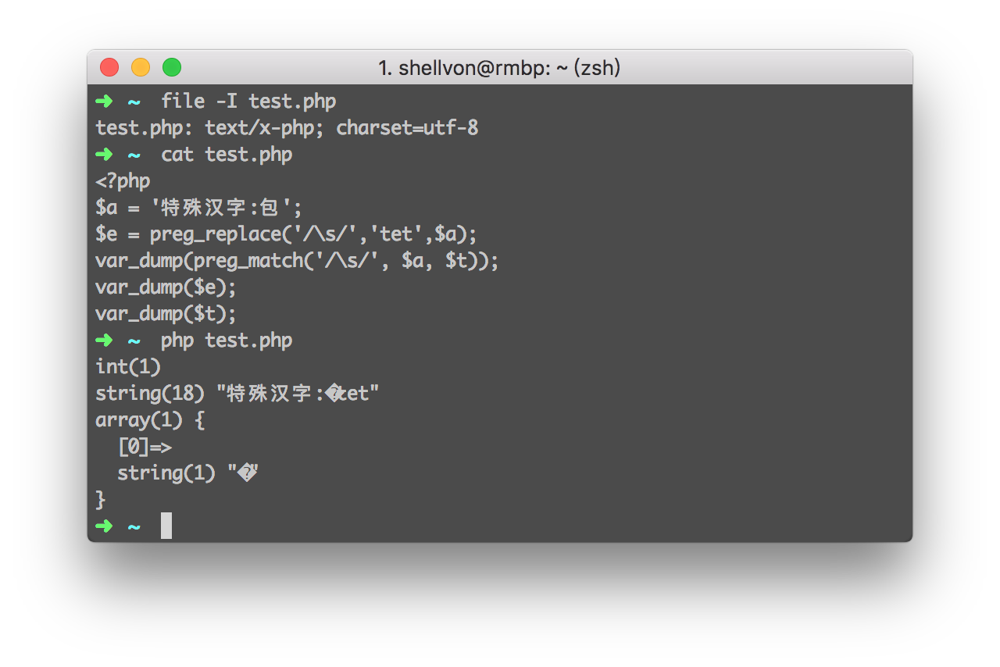

2016-04-05 11:20
有趣的preg_replace
前言
前几天我在给公司做内部项目的接口迁移时发现了某个比较有趣的bug：
环境:PHP 5.6.19和PHP 5.5.30
<?php $prejson = function($data)use(&$prejson, $en_json) { if (is_array($data)) { foreach ($data as $k=>$r) { $data[$k] = $prejson($r); } return $data; } else { $str = preg_replace("/\\s/isU"," ",$data); $str = str_replace("\\","\\\\",$str); $str = !$en_json ? str_replace('"','\"',$str) : urlencode(str_replace('"','\"',$str)); return $str; } };
Bug及其探究
看样子这个PHP的匿名函数主要是做的防止json_encode出来的中文被转义(低版本的json_encode函数不支持JSON_UNESCAPED_UNICODE)。
但是注意到其中preg_replace这里，有一个很细微的bug,关于preg_replace的。
如果需要替换的$data中含有某些比较特殊的汉字，那么这个转化出来的json可能会出现乱码，比如汉字包。
以下是测试结果：

但是为什么会出现这个结果呢？和我的电脑有关系么？我去了这里做了一下测试：
然后我在windows 10 64bit中XAMPP带的PHP执行，同样没有乱码，而且我保证我存的文件都是utf8的，mb_internal_encodig也是utf8.但是眼前的一切真的让我虎躯一震。我的电脑真的乱码了~~难道我电脑坏了，我试过了iconv/mb_convert_encoding都无济于事。心好累。
后来同学提示说说可不可能replace只替换了汉字包的一部分！！我说怎么可能？\s匹配的是whitespace空格呀，我汉字里面就是unicode编码也不会出现空格吧。
PHP官方文档上关于转移字符说的是
\s any whitespace character
但是慢着，别慌。谁说whitespace就一定只有空格的呀？维基百科里面说的有那么多种！！
于是我把汉字包给转化成unicode需要显示的字
encodeURIComponent('包') => "%E5%8C%85"
然后在维基百科种找到了U+0085 => next line好吧，到这里一切都豁然开朗。
也就是我给了汉字包过去,对于preg_match/preg_replace这种函数，即使我字符串是utf8的，对于他得到的regex,会给我理解成/[\xE5\x8C\x85]/这种形式。所以\s匹配成功。。。。。
所以不仅仅是汉字包，其他汉字如果出现了\s中能匹配的Unicode，那么理论上也会被匹配掉呢。
但是为什么我在3v4l.org上和windows上都没出现乱码呢？我猜测和他们建立的regex不一样（但是不知道为什么会不一样) PHP7不一样估计是原生采用了unicode的方式。
解决方法
- 用PHP7吧！
- 修改成mb_系列的函数。（和
mb_strlen/str_len那种感觉类似） - 加上
u这个flag:http://php.net/manual/en/reference.pcre.pattern.modifiers.php (这下面别人的讨论其实就是我这次遇到的bug的解决方案！！！)
扩展阅读：
- http://php.net/manual/en/regexp.reference.escape.php
- https://www.wikiwand.com/en/Whitespace_character
- http://php.net/manual/en/reference.pcre.pattern.modifiers.php
- PHP preg_match and UTF-8